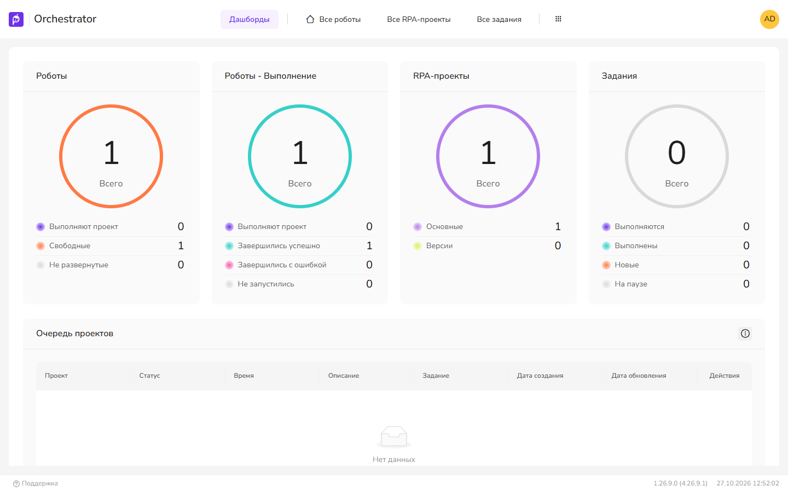

Дашборды и аналитика
Раздел Аналитика в UI4: встроенные дашборды Оркестратора и ссылки на отчёты Grafana. Метрики для Prometheus и Zabbix описаны в Мониторинг и метрики.
Аналитика → Дашборды
Набор карточек фиксирован: порядок и видимость в 1.26.9 не настраиваются. Данные возвращает метод GET api/Stats, для него требуется право Stats.View (в старых подписях — «Главная» / «Мониторинг»).
| Карточка | Что показывает |
|---|---|
| Роботы | Выполняют проект, свободные, не развернутые. |
| Роботы - Выполнение | Роботы по исходу запусков: выполняют, успешно, с ошибкой, не запустились, не завершились, остановленные вручную. |
| RPA-проекты | Основные проекты и версии. |
| Задания | Выполняются, новые, выполнены, на паузе. |
| Очередь проектов | Последние проекты в очереди и время ожидания (мин. и макс.). Большое значение «Время» означает, что проекты ставятся в очередь повторно: недостаточно роботов или лицензий. |
| Машины роботов | Доступность машин, число развернутых роботов, метрики. Есть кнопка «Показать все машины». |
| Активные пользователи | Пользователи, работающие в Оркестраторе в текущий момент. |
| Использование лицензий Робота | Свободные и занятые лицензии Enterprise и Desktop. |
| Использование лицензий Студии | Число одновременно работающих экземпляров Студии. |
| Интенсивность потока событий от триггеров | Нагрузка от триггеров; «Нагрузка в пределах нормы» — штатное состояние. |
| Мерцающие RDP-сессии | Сессии, которые часто разрываются и переподключаются. |

Аналитика → Grafana
На вкладке размещены не встроенные отчёты, а плитки со ссылками на дашборды Grafana. Список плиток задаётся в конфигурации WebApi. При входе он загружается в UI4 через GET api/Settings/GrafanaReportItems (право Settings.View). Если список пуст, на странице отображается «Аналитика не настроена».
| Параметр | Назначение | По умолчанию |
|---|---|---|
Grafana:ReportItems | Массив вкладок: Name и Items. Каждый элемент — Name, Url, Description (подсказка на плитке). | не задано |
В мультитенантной установке к каждой ссылке добавляется параметр var-TenantId с тенантом пользователя. Ссылки открываются в новой вкладке. Через nginx Оркестратора Grafana доступна по пути /grafana/ (upstream 127.0.0.1:3000).
- Добавьте в конфигурацию WebApi секцию
Grafana:ReportItemsсо ссылками на дашборды Grafana и перезапустите WebApi. - Выйдите из UI4 и войдите снова: список читается при входе и кешируется в браузере. В Аналитика → Grafana появились вкладки с плитками
Данные для отчётов собирает служба Analytic (отдельная БД, подключение AnalyticConnection). Права службы —Analytic.View и Analytic.AnalyticUpdate.